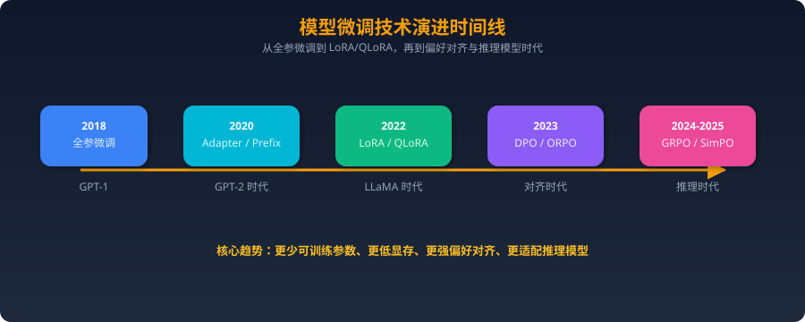
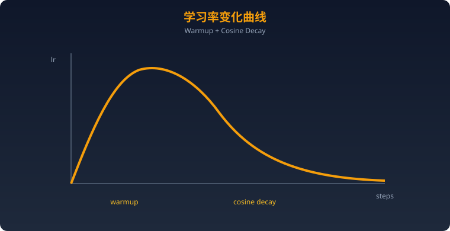
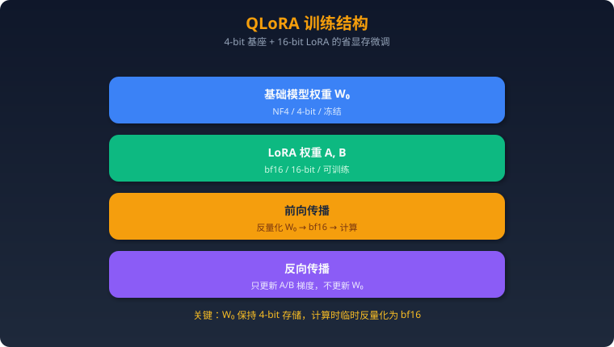
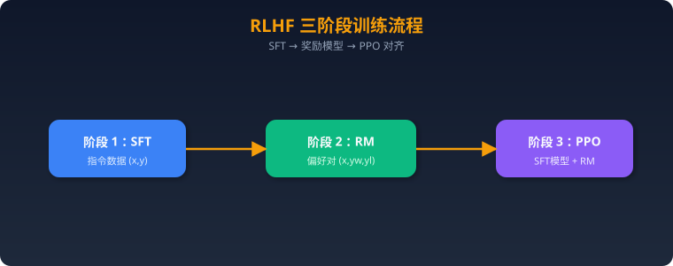
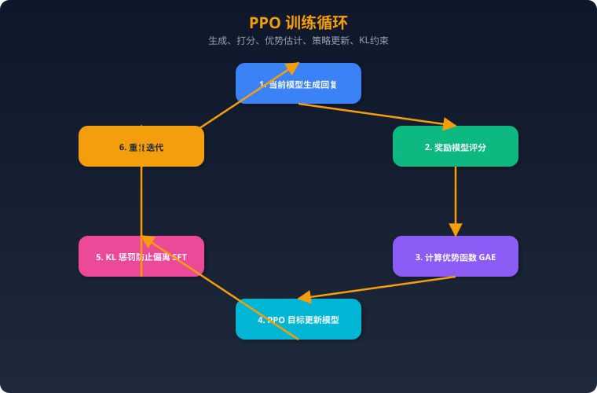
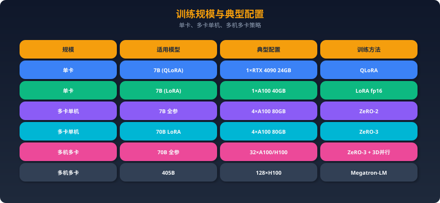
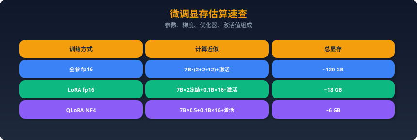

模型微调：SFT / LoRA / RLHF
2025年Agent工程师必考内容，涵盖从原理到实战的完整知识体系。
一、微调基础
1.1 为什么需要微调？
预训练模型的局限
预训练模型（如 LLaMA、Qwen、Mistral）通过海量通用语料训练，具备强大的语言理解和生成能力，但存在以下局限：
| 局限 | 说明 |
|---|---|
| 领域知识不足 | 医疗、法律、金融等垂直领域的专业知识覆盖不够深 |
| 输出格式不可控 | 无法稳定输出 JSON、特定模板等结构化格式 |
| 风格不匹配 | 语气、角色、回复长度难以精确控制 |
| 指令遵循差 | base 模型不擅长遵循复杂指令 |
| 幻觉问题 | 对特定领域事实容易编造 |
| 安全对齐缺失 | base 模型没有安全边界 |
微调 vs RAG vs Prompt Engineering 的选择决策树
需求分析
├── 需要注入新知识/实时数据？
│ ├── 是 → RAG（检索增强生成）
│ └── 否 ↓
├── 需要改变模型行为/风格/格式？
│ ├── 是 → 微调（Fine-tuning）
│ └── 否 ↓
├── 简单任务调整即可？
│ ├── 是 → Prompt Engineering
│ └── 否 ↓
└── 复杂场景 → 微调 + RAG 混合方案
详细对比：
| 维度 | Prompt Engineering | RAG | 微调 |
|---|---|---|---|
| 成本 | 最低 | 中等 | 最高 |
| 开发周期 | 小时级 | 天级 | 周级 |
| 新知识注入 | ❌ | ✅ | ⚠️ 需重新训练 |
| 行为改变 | 有限 | 有限 | ✅ 深度改变 |
| 推理延迟 | 低 | 中（检索开销） | 低 |
| 可维护性 | 高 | 中 | 低 |
| 适合场景 | 简单任务 | 知识密集型 | 行为定制型 |
什么时候该微调、什么时候不该
✅ 应该微调的场景： - 需要模型学会特定的输出格式（如 Function Calling、Agent 工具调用格式） - 需要特定领域的专业语言风格（如医疗报告生成） - 需要模型遵循复杂的业务规则 - 有高质量的领域标注数据（>1000条） - 需要降低推理成本（用小模型替代大模型+长 prompt） - 安全对齐和价值观定制
❌ 不应该微调的场景： - 知识会频繁更新（用 RAG） - 数据量太少（<100条，用 few-shot） - Prompt Engineering 已经能解决 - 没有 GPU 资源 - 任务太简单，不值得投入
1.2 微调范式演进

全参数微调（Full Fine-tuning）
- 更新模型的所有参数
- 优点：效果上限最高，充分利用模型容量
- 缺点：显存需求巨大，7B模型全参微调需要 ~120GB 显存（AdamW优化器）
- 计算公式：显存 ≈ 模型参数量 × (2 + 2 + 2×4) = 参数量 × 12 字节（fp16 + AdamW）
- 例：7B × 12 = 84GB（加上激活值约 120GB）
参数高效微调（PEFT）
核心思想：冻结大部分参数，只训练少量新增或选定参数
主要方法： | 方法 | 原理 | 可训练参数占比 | |------|------|---------------| | LoRA | 低秩矩阵分解 | 0.1% - 1% | | Prefix Tuning | 在输入前加可学习前缀 | <0.1% | | Adapter | 在层间插入小型网络 | 1% - 3% | | IA³ | 学习激活值的缩放向量 | <0.01% | | Prompt Tuning | 学习连续的 soft prompt | <0.01% |
指令微调（Instruction Tuning）
- 目标：让模型学会遵循人类指令
- 数据形式：(instruction, input, output) 三元组
- 代表工作：FLAN、InstructGPT、Alpaca
- 关键发现：少量高质量指令数据（~1000条）就能显著提升指令遵循能力（LIMA论文）
对齐微调（Alignment）
- 目标：让模型的输出符合人类价值观和偏好
- 方法：RLHF、DPO、KTO、ORPO、GRPO
- 核心：从"能力"到"对齐"——不是让模型更聪明，而是让它更安全、更有用、更诚实
- HHH原则：Helpful（有用）、Honest（诚实）、Harmless（无害）
二、SFT（Supervised Fine-Tuning）
2.1 原理
监督学习范式
SFT 本质上是一个条件语言建模任务：给定输入序列 x，生成目标序列 y。
训练目标：最大化条件概率 P(y|x)
输入: [系统提示] + [用户指令] + [输入]
输出: [模型回复]
模型学习：在给定输入的条件下，生成正确回复的概率最大化
损失函数（Cross-Entropy）
- T: 目标序列长度
- yt: 第 t 个 token
- y<t: 前 t-1 个 token
- x: 输入序列
关键细节 —— Loss Mask：
输入tokens: [BOS] 你 是 谁 ？ [SEP] 我 是 AI 助 手 [EOS]
Loss mask: 0 0 0 0 0 0 1 1 1 1 1 1
不计算loss 计算loss
只对输出部分计算 loss，输入部分被 mask 掉。这是 SFT 区别于预训练的核心。
训练流程
1. 准备数据 → 2. 数据预处理（Tokenize + Padding/Packing）
→ 3. 选择基础模型 → 4. 配置训练参数
→ 5. 训练（带验证集监控） → 6. 评估
→ 7. 合并权重（如LoRA） → 8. 部署
2.2 训练数据构建（重点！）
数据格式
1. Alpaca 格式（最简单）
{
"instruction": "将以下文本翻译成英文",
"input": "今天天气很好",
"output": "The weather is nice today."
}
2. ShareGPT 格式（多轮对话）
{
"conversations": [
{"from": "human", "value": "解释一下什么是机器学习"},
{"from": "gpt", "value": "机器学习是人工智能的一个分支..."},
{"from": "human", "value": "那深度学习呢？"},
{"from": "gpt", "value": "深度学习是机器学习的一个子集..."}
]
}
3. ChatML 格式（OpenAI 标准）
<|im_start|>system
你是一个有用的AI助手。<|im_end|>
<|im_start|>user
什么是微调？<|im_end|>
<|im_start|>assistant
微调是在预训练模型基础上...<|im_end|>
4. LLaMA-3 格式
<|begin_of_text|><|start_header_id|>system<|end_header_id|>
你是一个AI助手。<|eot_id|><|start_header_id|>user<|end_header_id|>
什么是LoRA？<|eot_id|><|start_header_id|>assistant<|end_header_id|>
LoRA是一种参数高效微调方法...<|eot_id|>
数据质量 vs 数据数量
质量 >> 数量，这是2023-2025年的核心共识。
| 研究 | 结论 |
|---|---|
| LIMA (2023) | 仅 1000 条精选数据微调 LLaMA-65B，效果接近 GPT-4 |
| Alpaca (2023) | 52K 条合成数据，效果显著但有天花板 |
| Deita (2024) | 6K 条精选数据 > 100K 条随机数据 |
| 质量指标 | 多样性 > 复杂度 > 数量 |
高质量数据的特征： - ✅ 指令清晰、无歧义 - ✅ 回复准确、详细、有逻辑 - ✅ 覆盖多种任务类型和难度 - ✅ 格式一致 - ❌ 避免重复、矛盾、过时信息
数据清洗和去重
# 1. 基于 MinHash 的近似去重
from datasketch import MinHash, MinHashLSH
def create_minhash(text, num_perm=128):
m = MinHash(num_perm=num_perm)
for word in text.split():
m.update(word.encode('utf8'))
return m
lsh = MinHashLSH(threshold=0.8, num_perm=128)
# 插入和查询去重...
# 2. 基于规则的清洗
def clean_data(item):
# 去除过短的回复
if len(item['output']) < 20:
return None
# 去除含有不当内容的
if contains_toxic(item['output']):
return None
# 去除指令和回复不匹配的
if not is_relevant(item['instruction'], item['output']):
return None
return item
# 3. 基于嵌入的语义去重
from sentence_transformers import SentenceTransformer
model = SentenceTransformer('all-MiniLM-L6-v2')
embeddings = model.encode(texts)
# 聚类后每簇保留一条代表性样本
合成数据生成
Self-Instruct（斯坦福 Alpaca）
1. 准备种子任务（175条人工编写）
2. 用 GPT-4 基于种子生成新指令
3. 过滤低质量、重复的指令
4. 用 GPT-4 生成对应的回复
5. 迭代扩充数据集
Evol-Instruct（WizardLM）
原始指令: "写一个排序算法"
↓ 深度进化
进化指令: "用Python实现一个混合排序算法，对小数组用插入排序，
大数组用快排，并分析时间复杂度，写单元测试"
↓ 广度进化
进化指令: "比较5种排序算法在不同数据分布下的性能表现"
2024-2025年数据合成趋势： - Magpie：直接从对齐模型中提取高质量指令 - Persona-driven：用不同人格生成多样化数据 - Rejection Sampling：生成多个回复，选最好的
多轮对话数据构建
{
"conversations": [
{"role": "system", "content": "你是一个编程助手"},
{"role": "user", "content": "帮我写一个快排"},
{"role": "assistant", "content": "```python\ndef quicksort(arr):\n ...```"},
{"role": "user", "content": "加上注释"},
{"role": "assistant", "content": "```python\ndef quicksort(arr):\n # 基准情况...\n ...```"},
{"role": "user", "content": "时间复杂度是多少？"},
{"role": "assistant", "content": "平均O(n log n)，最坏O(n²)..."}
]
}
多轮数据的 Loss Mask 策略： - 全部assistant轮计算loss：最常见，每轮回复都参与训练 - 仅最后一轮计算loss：适合对话式推理，防止中间轮过拟合 - 加权loss：后面轮次权重更大
2.3 训练技巧
学习率调度
# Cosine 退火（最常用）
from transformers import get_cosine_schedule_with_warmup
scheduler = get_cosine_schedule_with_warmup(
optimizer,
num_warmup_steps=100, # warmup 步数
num_training_steps=10000 # 总步数
)
# 推荐学习率范围
# 全参微调: 1e-5 ~ 5e-5
# LoRA: 1e-4 ~ 3e-4
# QLoRA: 1e-4 ~ 2e-4

Batch Size 选择
- 经验法则：有效 batch size = 实际 batch size × 梯度累积步数 × GPU数量
- 推荐有效 batch size：32 ~ 128
- 小 batch size（<16）：训练不稳定，loss 抖动大
- 大 batch size（>256）：可能影响泛化，收敛到更尖锐的最小值
梯度累积
# 显存不够时，用梯度累积模拟大 batch
training_args = TrainingArguments(
per_device_train_batch_size=2, # 每GPU实际batch
gradient_accumulation_steps=16, # 累积16步
# 有效 batch = 2 × 16 = 32
)
混合精度训练（bf16/fp16）
| 特性 | fp32 | fp16 | bf16 |
|---|---|---|---|
| 位数 | 32 | 16 | 16 |
| 指数位 | 8 | 5 | 8 |
| 尾数位 | 23 | 10 | 7 |
| 数值范围 | 大 | 小（易溢出） | 大（同fp32） |
| 精度 | 高 | 中 | 较低 |
| 显存节省 | 基准 | 50% | 50% |
| 推荐 | ❌太慢 | ⚠️需loss scaling | ✅ 首选 |
training_args = TrainingArguments(
bf16=True, # A100/H100 推荐
# fp16=True, # V100/T4 使用（需 loss scaling）
)
DeepSpeed ZeRO Stage 1/2/3

// ds_config_zero3.json
{
"zero_optimization": {
"stage": 3,
"offload_optimizer": {"device": "cpu"},
"offload_param": {"device": "cpu"},
"overlap_comm": true,
"contiguous_gradients": true,
"reduce_bucket_size": 5e8
},
"bf16": {"enabled": true},
"train_batch_size": 32,
"gradient_accumulation_steps": 8
}
三、LoRA（Low-Rank Adaptation）
3.1 原理详解
低秩分解的数学原理
LoRA 的核心思想：预训练权重矩阵的更新量是低秩的。
原始: Y = W₀X (W₀ ∈ ℝ^{d×k}, 冻结)
LoRA: Y = W₀X + BAX (B ∈ ℝ^{d×r}, A ∈ ℝ^{r×k}, 可训练)
其中 r << min(d, k)
例如: d=4096, k=4096, r=16
- W₀ 参数量: 4096 × 4096 = 16,777,216 (冻结)
- BA 参数量: 4096 × 16 + 16 × 4096 = 131,072 (可训练)
- 参数占比: 131072 / 16777216 = 0.78%

初始化： - A：高斯随机初始化（或 Kaiming 初始化） - B：零初始化 - 保证训练开始时 BA = 0，即不改变原模型行为
为什么有效？（内在维度假说）
Aghajanyan et al. (2021) 的研究表明：
预训练模型的任务适应过程具有很低的内在维度（intrinsic dimension）。即使参数空间是百万维的，有效的适应只需要在一个很低维的子空间中进行。
直觉理解： - 预训练已经学到了通用的语言知识 - 微调只需要在这个基础上做小幅调整 - 这些调整可以用低秩矩阵近似
实验证据： - LoRA rank=8 在大多数任务上就能达到全参微调 90%+ 的效果 - rank 从 4 增到 64，边际收益递减 - 不同任务的最优 rank 不同（简单任务低 rank，复杂任务高 rank）
rank r 的选择
| rank | 参数量（7B模型） | 适用场景 | 效果 |
|---|---|---|---|
| 4 | ~4M | 简单任务（分类、情感） | 够用 |
| 8 | ~8M | 通用指令微调 | ✅ 常用 |
| 16 | ~17M | 复杂任务（代码、推理） | ✅ 推荐 |
| 32 | ~34M | 领域深度定制 | 好 |
| 64 | ~67M | 接近全参效果 | 最佳但性价比降低 |
| 128+ | ~134M+ | 特殊需求 | 考虑全参微调 |
选择建议： - 默认从 r=16 开始 - 如果数据少（<1K），用 r=8 - 如果效果不够，先提高数据质量，再考虑增加 rank
alpha 参数的作用
实际缩放: ΔW = (α/r) × BA
α（alpha）控制 LoRA 更新的缩放系数：
- α = r: 缩放因子 = 1，标准缩放
- α = 2r: 缩放因子 = 2，更大的更新（常用设置）
- α = 16, r = 16: 缩放 = 1
- α = 32, r = 16: 缩放 = 2（推荐）
最佳实践： alpha 通常设为 rank 的 1-2 倍。常见配置： - r=16, alpha=32 - r=8, alpha=16 - r=64, alpha=128
target_modules 的选择
# Transformer 注意力层的组成（以 LLaMA 为例）
# Q, K, V, O: 注意力投影
# gate_proj, up_proj, down_proj: FFN层
# 常见配置策略：
# 1. 最小配置（只训练注意力查询和值）
target_modules = ["q_proj", "v_proj"] # 参数最少，效果不错
# 2. 标准配置（推荐）
target_modules = ["q_proj", "k_proj", "v_proj", "o_proj"]
# 3. 完整配置（含FFN，效果最好）
target_modules = [
"q_proj", "k_proj", "v_proj", "o_proj",
"gate_proj", "up_proj", "down_proj"
]
# 4. all-linear（所有线性层，2024年推荐做法）
target_modules = "all-linear"
研究结论： - 只训练 q_proj + v_proj 是 LoRA 论文的原始建议 - 2024年共识：训练更多模块 + 更低 rank 效果优于 少模块 + 高 rank - 加入 FFN 层（gate/up/down_proj）能显著提升复杂任务的效果
3.2 LoRA 变体
LoRA+
- 核心改进：A 和 B 矩阵使用不同的学习率
- B 的学习率设为 A 的 λ 倍（论文推荐 λ = 16）
- 理论依据：B 初始化为零，需要更大的学习率来快速学习
- 效果：在相同训练步数下收敛更快，最终效果提升 1-2%
# LoRA+ 配置
from peft import LoraConfig
lora_config = LoraConfig(
r=16,
lora_alpha=32,
# LoRA+ 通过不同学习率组实现
# 需要手动设置优化器参数组
)
DoRA（Weight-Decomposed Low-Rank Adaptation）
标准 LoRA: W' = W + BA
DoRA: W' = m × (W + BA) / ||W + BA||
将权重分解为：幅度（magnitude）m × 方向（direction）V/||V||
- 灵感来自权重归一化（Weight Normalization）
- 分离了权重的"大小"和"方向"的学习
- 效果：在多数基准测试上比 LoRA 提升 1-3%
- 代价：略增加计算量
AdaLoRA（自适应 rank 分配）
- 核心思想：不同层/模块的重要性不同，动态分配 rank
- 训练时用 SVD 分解监控每个模块的重要性
- 重要模块分配更高的 rank，不重要的降低
- 总参数量预算固定，实现更优的参数利用
Layer 1: 不太重要 → rank=4
Layer 5: 中等重要 → rank=16
Layer 15: 非常重要 → rank=32
Layer 31: 中等重要 → rank=8
rsLoRA（Rank-Stabilized LoRA）
- 修改缩放因子从 α/r 为 α/√r
- 使得 LoRA 在不同 rank 下的训练动态更稳定
- 特别是在高 rank（r=64, 128）时效果更好
- 2024年被集成到 HuggingFace PEFT 中
3.3 实战配置
HuggingFace PEFT 库使用
import torch
from transformers import AutoModelForCausalLM, AutoTokenizer, TrainingArguments
from peft import LoraConfig, get_peft_model, TaskType
from trl import SFTTrainer
# 1. 加载基础模型
model_name = "meta-llama/Llama-3.1-8B"
model = AutoModelForCausalLM.from_pretrained(
model_name,
torch_dtype=torch.bfloat16,
device_map="auto",
attn_implementation="flash_attention_2" # 使用 Flash Attention
)
tokenizer = AutoTokenizer.from_pretrained(model_name)
tokenizer.pad_token = tokenizer.eos_token
# 2. 配置 LoRA
lora_config = LoraConfig(
task_type=TaskType.CAUSAL_LM,
r=16, # rank
lora_alpha=32, # alpha = 2 * r
lora_dropout=0.05, # dropout
target_modules=[ # 目标模块
"q_proj", "k_proj", "v_proj", "o_proj",
"gate_proj", "up_proj", "down_proj"
],
bias="none", # 不训练 bias
# use_rslora=True, # 使用 rsLoRA
# use_dora=True, # 使用 DoRA
)
# 3. 应用 LoRA
model = get_peft_model(model, lora_config)
model.print_trainable_parameters()
# 输出: trainable params: 83,886,080 || all params: 8,030,261,248 || trainable%: 1.04%
# 4. 训练参数
training_args = TrainingArguments(
output_dir="./output",
num_train_epochs=3,
per_device_train_batch_size=4,
gradient_accumulation_steps=8,
learning_rate=2e-4,
lr_scheduler_type="cosine",
warmup_ratio=0.05,
bf16=True,
logging_steps=10,
save_strategy="steps",
save_steps=200,
eval_strategy="steps",
eval_steps=200,
save_total_limit=3,
gradient_checkpointing=True, # 节省显存
optim="adamw_torch",
report_to="wandb",
)
# 5. 使用 SFTTrainer
trainer = SFTTrainer(
model=model,
args=training_args,
train_dataset=train_dataset,
eval_dataset=eval_dataset,
tokenizer=tokenizer,
max_seq_length=2048,
packing=True, # 样本打包，提高GPU利用率
)
trainer.train()
# 6. 保存 LoRA 权重
model.save_pretrained("./lora_weights")
# 7. 合并权重并保存完整模型
merged_model = model.merge_and_unload()
merged_model.save_pretrained("./merged_model")
超参数最佳实践
| 超参数 | 推荐值 | 说明 |
|---|---|---|
| rank | 16-32 | 复杂任务用 32-64 |
| alpha | 2×rank | 常见设置 |
| dropout | 0.05 | 数据少时可增到 0.1 |
| lr | 1e-4 ~ 3e-4 | LoRA 比全参微调大10倍 |
| epochs | 2-5 | 数据少多跑几轮 |
| batch_size | 32-128（有效） | 通过梯度累积达到 |
| max_seq_len | 2048-4096 | 根据数据分布选择 |
| warmup | 3-10% | 总步数的比例 |
| weight_decay | 0.01-0.1 | 防止过拟合 |
四、QLoRA
4.1 原理
QLoRA（Quantized LoRA）是 2023 年由 Dettmers et al. 提出的方法，核心创新是在 4-bit 量化的模型上做 LoRA 训练。
4-bit NormalFloat (NF4) 量化
传统量化: 均匀分布的量化级别
NF4量化: 基于正态分布的量化级别
权重通常服从正态分布 N(0, σ²)，NF4 的量化级别按照
正态分布的分位数设计，使信息损失最小化。
fp16 → NF4:
16 bit/参数 → 4 bit/参数 → 显存节省 75%
NF4 的 16 个量化级别（4 bit = 2⁴ = 16 个值）：
[-1.0, -0.6962, -0.5251, -0.3949, -0.2844, -0.1848, -0.0911, 0.0,
0.0796, 0.1609, 0.2461, 0.3379, 0.4407, 0.5626, 0.7230, 1.0]
双重量化（Double Quantization）
第一层量化: 模型权重 fp16 → NF4 (每64个权重共享一个 fp32 缩放因子)
第二层量化: 缩放因子 fp32 → fp8 (进一步压缩)
显存节省计算:
- 第一层: 4bit/参数 + 32bit/64参数 = 4 + 0.5 = 4.5 bit/参数
- 加双重量化: 4bit/参数 + 8bit/64参数 = 4 + 0.125 = 4.125 bit/参数
- 节省: 0.375 bit/参数 → 7B模型省约 0.33GB
分页优化器（Paged Optimizer）
问题: 训练中的显存峰值（前向+反向传播时）可能超出GPU显存
解决: 利用 NVIDIA 统一内存（Unified Memory）机制
当GPU显存不足时:
GPU显存 ←→ CPU内存 自动分页交换
类似操作系统的虚拟内存/swap，但用于GPU显存管理
在量化模型上做 LoRA

4.2 优势与局限
显存节省数据
| 模型大小 | 全参微调 | LoRA (fp16) | QLoRA (NF4) |
|---|---|---|---|
| 7B | ~120GB | ~18GB | ~6GB |
| 13B | ~220GB | ~32GB | ~10GB |
| 30B | ~480GB | ~70GB | ~24GB |
| 70B | ~1120GB | ~160GB | ~48GB |
💡 QLoRA 使得 70B 模型在单张 A100 80GB 上可训练！
精度损失分析
| 对比 | MMLU | GSM8K | HumanEval |
|---|---|---|---|
| 全参微调 | 63.5 | 52.1 | 35.4 |
| LoRA fp16 | 63.1 | 51.5 | 34.8 |
| QLoRA NF4 | 62.8 | 50.8 | 34.1 |
| 损失 | ~1% | ~2.5% | ~3.6% |
结论：QLoRA 精度损失在 1-4% 范围内，对大多数应用可接受。
训练速度影响
- QLoRA 比 LoRA fp16 慢约 30-50%（反量化计算开销）
- 但由于显存节省，可以用更大的 batch size 部分弥补
- 综合性价比：QLoRA 是资源受限场景的最优选择
4.3 实战
bitsandbytes 配置
import torch
from transformers import AutoModelForCausalLM, BitsAndBytesConfig
# QLoRA 量化配置
bnb_config = BitsAndBytesConfig(
load_in_4bit=True, # 4-bit 量化
bnb_4bit_quant_type="nf4", # NF4 量化类型
bnb_4bit_compute_dtype=torch.bfloat16, # 计算时用 bf16
bnb_4bit_use_double_quant=True, # 双重量化
)
# 加载量化模型
model = AutoModelForCausalLM.from_pretrained(
"meta-llama/Llama-3.1-70B",
quantization_config=bnb_config,
device_map="auto",
attn_implementation="flash_attention_2",
)
# 准备训练
from peft import prepare_model_for_kbit_training
model = prepare_model_for_kbit_training(model)
# 后续 LoRA 配置和训练与标准 LoRA 相同
from peft import LoraConfig, get_peft_model
lora_config = LoraConfig(
r=64, # QLoRA 通常用更高的 rank
lora_alpha=128,
target_modules="all-linear",
lora_dropout=0.05,
bias="none",
task_type="CAUSAL_LM",
)
model = get_peft_model(model, lora_config)
与 LoRA 的对比实验数据

五、RLHF / DPO / GRPO
5.1 RLHF 三阶段
总体流程

阶段1: SFT（已在前面详述）
用指令数据训练基础模型，获得初始的指令遵循能力。
阶段2: 奖励模型训练
输入: prompt x + response y
输出: 标量奖励分数 r(x, y)
训练数据格式:
(prompt, chosen_response, rejected_response)
"写一首诗" → chosen: [优美的诗] vs rejected: [低质量的诗]
损失函数 (Bradley-Terry模型):
L = -log σ(r(x, y_w) - r(x, y_l))
其中 y_w 是偏好的回复，y_l 是不偏好的回复
σ 是 sigmoid 函数
# 奖励模型训练（简化版）
from trl import RewardTrainer, RewardConfig
reward_config = RewardConfig(
output_dir="./reward_model",
num_train_epochs=1,
per_device_train_batch_size=8,
learning_rate=1e-5,
bf16=True,
)
reward_trainer = RewardTrainer(
model=reward_model, # 通常用 SFT 模型初始化
args=reward_config,
train_dataset=preference_data, # (chosen, rejected) 对
tokenizer=tokenizer,
)
reward_trainer.train()
阶段3: PPO 优化
目标函数:
max E[R(x, y)] - β × KL(π_θ || π_ref)
其中:
- R(x, y): 奖励模型给出的分数
- π_θ: 当前策略（正在训练的模型）
- π_ref: 参考策略（SFT模型，冻结）
- β: KL 惩罚系数（通常 0.01-0.2）
- KL散度: 防止模型偏离太远，避免 reward hacking

PPO 的 KL 惩罚为什么重要？
没有 KL 惩罚时： - 模型会学会"欺骗"奖励模型（reward hacking） - 例如生成冗长但无意义的回复来获得高分 - 输出会变得不自然
5.2 DPO（Direct Preference Optimization）
核心思想：跳过奖励模型
RLHF: 数据 → 训练RM → PPO训练 (复杂、不稳定)
DPO: 数据 → 直接优化偏好 (简单、稳定)
DPO 的关键洞察：奖励函数可以用最优策略的闭式解表示，从而跳过显式奖励建模。
数学推导（简化版）
RLHF 的最优解:
π*(y|x) = (1/Z(x)) × π_ref(y|x) × exp(r(x,y)/β)
反推奖励函数:
r(x,y) = β × log(π*(y|x)/π_ref(y|x)) + β × log Z(x)
代入 Bradley-Terry 偏好模型:
P(y_w > y_l | x) = σ(r(x,y_w) - r(x,y_l))
最终 DPO 损失:
L_DPO = -E[log σ(β × (log π_θ(y_w|x)/π_ref(y_w|x)
- log π_θ(y_l|x)/π_ref(y_l|x)))]
直觉: 增大 chosen 回复的概率，减小 rejected 回复的概率
同时用参考模型约束不要偏离太远
优缺点
| 维度 | DPO | PPO (RLHF) |
|---|---|---|
| 实现复杂度 | ✅ 简单 | ❌ 复杂（4个模型） |
| 训练稳定性 | ✅ 稳定 | ❌ 不稳定 |
| 显存需求 | ✅ 2个模型 | ❌ 4个模型 |
| 超参数敏感度 | ✅ 少（主要是β） | ❌ 多 |
| 效果上限 | ⚠️ 受限于离线数据 | ✅ 在线探索更强 |
| 奖励过优化 | ⚠️ 可能 | ⚠️ 可能但可控 |
代码思路
from trl import DPOTrainer, DPOConfig
# DPO 数据格式
# {"prompt": "...", "chosen": "...", "rejected": "..."}
dpo_config = DPOConfig(
output_dir="./dpo_output",
num_train_epochs=3,
per_device_train_batch_size=4,
gradient_accumulation_steps=4,
learning_rate=5e-7, # DPO 学习率要小！
beta=0.1, # KL 惩罚系数
bf16=True,
loss_type="sigmoid", # 标准 DPO loss
# loss_type="ipo", # IPO 变体
max_length=2048,
max_prompt_length=1024,
)
dpo_trainer = DPOTrainer(
model=sft_model, # SFT 后的模型
ref_model=ref_model, # 参考模型（通常是 SFT 模型的副本）
args=dpo_config,
train_dataset=preference_data,
tokenizer=tokenizer,
)
dpo_trainer.train()
5.3 DeepSeek GRPO
Group Relative Policy Optimization
GRPO 是 DeepSeek 在 DeepSeek-R1 中使用的对齐方法，核心改进：
PPO: 一个样本 → 一个奖励值 → 需要 Critic 网络估计基线
GRPO: 一个问题 → 生成G个回复 → 组内相对排序作为奖励
关键区别: GRPO 不需要单独的 Critic 网络（价值函数）！
GRPO 流程:
1. 给定 prompt x, 用当前模型采样 G 个回复 {y₁, y₂, ..., yG}
2. 用奖励模型（或规则）给每个回复打分 {r₁, r₂, ..., rG}
3. 组内标准化: r̂ᵢ = (rᵢ - mean(r)) / std(r)
4. 用标准化后的奖励作为优势函数更新模型
损失函数:
L_GRPO = -E[Σᵢ min(ρᵢ × Âᵢ, clip(ρᵢ, 1-ε, 1+ε) × Âᵢ)]
- β × KL(π_θ || π_ref)
其中 ρᵢ = π_θ(yᵢ|x) / π_old(yᵢ|x)
Âᵢ = r̂ᵢ (组内标准化奖励)
为什么 DeepSeek 选择 GRPO？
- 省资源：不需要 Critic 网络，减少 ~25% 显存
- 更稳定：组内相对排序比绝对奖励更鲁棒
- 适合推理任务：可以用规则奖励（如数学答案正确性）替代奖励模型
- 可扩展：G 越大，梯度估计越准确
DeepSeek-R1 的奖励设计:
- 准确性奖励: 答案正确 = +1, 错误 = -1
- 格式奖励: 按要求格式输出 = +0.5
- 无需复杂的神经网络奖励模型!
5.4 偏好数据构建
人工标注 vs AI标注（RLAIF）
| 方法 | 成本 | 质量 | 规模 | 代表 |
|---|---|---|---|---|
| 人工标注 | $$$$ | ✅ 最高 | 小（千级） | InstructGPT |
| AI标注（RLAIF） | $ | 较高 | 大（万级） | Constitutional AI |
| 混合方案 | $$ | 高 | 中等 | LLaMA-2 |
AI标注（RLAIF）流程：
1. 给同一个 prompt 生成多个回复（不同模型或不同采样）
2. 用 GPT-4/Claude 作为裁判，选择更好的回复
3. 构建 (prompt, chosen, rejected) 三元组
评判 prompt 示例:
"以下是对问题'{question}'的两个回复。
回复A: {response_a}
回复B: {response_b}
哪个回复更好？请从准确性、有用性、安全性三个维度评判。"
数据格式
// 标准偏好数据格式
{
"prompt": "解释量子纠缠",
"chosen": "量子纠缠是量子力学中一种神奇的现象...(详细准确的解释)",
"rejected": "量子纠缠就是两个粒子心灵感应...(不准确的解释)"
}
// 多轮对话偏好数据
{
"prompt": [
{"role": "user", "content": "什么是LoRA？"},
{"role": "assistant", "content": "LoRA是..."},
{"role": "user", "content": "怎么选rank？"}
],
"chosen": "rank的选择取决于任务复杂度...(详细建议)",
"rejected": "rank越大越好...(误导性建议)"
}
六、训练工具链
6.1 框架对比
| 特性 | HuggingFace TRL | LLaMA-Factory | Axolotl | OpenRLHF |
|---|---|---|---|---|
| SFT | ✅ | ✅ | ✅ | ✅ |
| LoRA/QLoRA | ✅ | ✅ | ✅ | ✅ |
| DPO | ✅ | ✅ | ✅ | ✅ |
| RLHF/PPO | ✅ | ✅（基础） | ❌ | ✅（专精） |
| GRPO | ✅ | ✅ | ❌ | ✅ |
| Web UI | ❌ | ✅（LLaMA Board） | ❌ | ❌ |
| 多模态 | ✅ | ✅ | ⚠️ 有限 | ❌ |
| 上手难度 | 中 | ✅ 最简单 | 中 | 较难 |
| 配置方式 | Python代码 | YAML/Web | YAML | Python |
| 分布式 | ✅ DeepSpeed/FSDP | ✅ DeepSpeed | ✅ DeepSpeed | ✅ Ray+vLLM |
| 社区活跃度 | ⭐⭐⭐⭐⭐ | ⭐⭐⭐⭐⭐ | ⭐⭐⭐⭐ | ⭐⭐⭐⭐ |
| 适合场景 | 研究/灵活定制 | 快速上手/生产 | 灵活配置 | 大规模RLHF |
推荐选择： - 🔰 入门/快速实验 → LLaMA-Factory（YAML 配置，带 Web UI） - 🔬 研究/自定义 → HuggingFace TRL（灵活，文档最全） - 🏗️ 大规模 RLHF → OpenRLHF（Ray 分布式，支持 70B+ 模型 PPO/GRPO） - ⚙️ 多实验配置管理 → Axolotl（YAML 配置管理优秀）
6.2 训练基础设施
单卡 vs 多卡 vs 多机

DeepSpeed vs FSDP
| 维度 | DeepSpeed | PyTorch FSDP |
|---|---|---|
| 维护方 | 微软 | PyTorch 官方 |
| ZeRO 支持 | Stage 1/2/3 | 等效 Stage 2/3 |
| CPU Offload | ✅ 成熟 | ✅ |
| 配置方式 | JSON 配置文件 | Python API |
| 生态集成 | HuggingFace/各框架 | PyTorch 原生 |
| 推荐 | ✅ 目前更成熟 | 🔄 快速追赶中 |
显存需求计算公式

七、面试题（20题）+ 完整参考答案
1. LoRA的原理？rank r怎么选？
答： LoRA（Low-Rank Adaptation）的核心思想是将微调过程中的权重更新矩阵 ΔW 分解为两个低秩矩阵的乘积：ΔW = BA，其中 B ∈ ℝ^{d×r}，A ∈ ℝ^{r×k}，r << min(d, k)。前向传播时 Y = W₀X + BAX，其中 W₀ 冻结，只训练 A 和 B。初始化时 B=0 保证训练起点不改变原模型。
为什么有效？ 基于内在维度假说——预训练模型的任务适应只需在一个低维子空间中进行。Aghajanyan et al. 实验表明，即使将微调限制在很低维的子空间，仍能保留 90%+ 的全参微调性能。
rank r 选择策略：
- r=8：简单分类、情感分析等任务足够
- r=16：通用指令微调的推荐起点
- r=32-64：复杂任务（代码生成、数学推理）
- 2024年最佳实践：用 target_modules="all-linear" + 较低 rank (8-16)，效果优于少模块 + 高 rank
实际操作：先用 r=16 跑 baseline，如果欠拟合则增加 rank；如果过拟合则减小 rank 或增加 dropout。一般 r=16 + alpha=32 覆盖 80% 场景。
2. QLoRA相比LoRA多了什么？为什么能省显存？
答： QLoRA 在 LoRA 基础上增加了三项关键技术：
1. NF4 量化： 将基础模型从 fp16（16 bit）量化到 NF4（4 bit）。NF4 是专为正态分布权重设计的量化类型，其 16 个量化级别按正态分布分位数排列，信息损失最小。一个 7B 模型从 14GB (fp16) 降到 3.5GB (NF4)。
2. 双重量化（Double Quantization）： 量化过程中每 64 个权重需要一个 fp32 的缩放因子（scale），双重量化把这些缩放因子进一步量化到 fp8，额外节省约 0.4GB/7B参数。
3. 分页优化器（Paged Optimizer）： 利用 NVIDIA 统一内存机制，当 GPU 显存不足时自动将优化器状态临时转移到 CPU 内存，类似操作系统的 swap。
显存节省原理： LoRA fp16 中基础模型仍然以 fp16 存储（7B×2=14GB），QLoRA 将其压缩到 NF4（7B×0.5=3.5GB），LoRA 的 A/B 矩阵仍用 bf16 训练但参数量只有全模型的 ~1%。结果是 7B 模型从 ~18GB 降到 ~6GB，70B 模型可以在单张 A100 80GB 上训练。代价是训练速度慢 30-50%（反量化计算开销）。
3. SFT的训练数据如何构建？数据质量和数量哪个更重要？
答： 数据质量远比数量重要，这是 2023-2025 年的核心共识。
数据构建流程： 1. 确定任务类型：指令遵循、对话、代码、推理等 2. 种子数据收集：人工编写 200-500 条高质量样本 3. 数据扩充：用 Self-Instruct 或 Evol-Instruct 合成更多数据 4. 质量过滤：去重（MinHash）、去短回复、去低质量样本 5. 多样性保证：覆盖不同任务类型、难度级别、输出格式
关键数据格式：Alpaca 格式 {instruction, input, output} 用于简单任务；ShareGPT/ChatML 格式用于多轮对话。
质量 vs 数量的研究证据： - LIMA 论文：仅 1000 条精选数据微调 LLaMA-65B，媲美 GPT-4 - Deita 研究：6K 精选 > 100K 随机 - 数据质量三要素：准确性 > 多样性 > 复杂度
实践建议： 先用 1000-5000 条高质量数据训练，评估效果，再决定是否扩充。扩充时优先提高多样性而非数量。使用 GPT-4 生成数据后必须人工审核至少 10%。
4. 全参微调 vs LoRA 各自适用场景？
答：
全参微调适用场景： - 需要模型深度领域适配（如训练一个医疗专用模型） - 训练数据量大（>100K 条） - 有充足 GPU 资源（多卡或大显存） - 追求效果上限，对成本不敏感 - 任务与预训练分布差异大（如新语言或特殊领域）
LoRA 适用场景： - 资源受限（单卡或消费级 GPU） - 快速实验迭代（训练快，可以多跑几组超参） - 需要多个任务特化版本（每个任务一个 LoRA adapter，共享基座模型） - 部署灵活性（可以在推理时动态加载不同 LoRA） - 数据量适中（1K-50K）
效果对比： 在大多数下游任务上，LoRA 可以达到全参微调 95%+ 的效果。当 rank 增大到 64-128 时差距更小。但在需要模型学习全新知识分布的场景（如从英文模型训中文能力），全参微调仍然明显更优。
2025年趋势： LoRA 已成为默认选择，全参微调仅在特定场景使用。多 LoRA 服务（如 S-LoRA、PunicaV2）使得单基座模型可同时服务数百个 LoRA 适配器。
5. 微调 vs RAG，如何选择？
答： 这是最高频的架构决策问题，核心在于区分知识注入和行为改变。
选 RAG 的场景： - 知识频繁更新（新闻、商品信息、法规变化） - 需要引用来源（可追溯性要求） - 知识量大且不断增长 - 需要精确的事实性回答（减少幻觉） - 快速上线（天级别）
选微调的场景： - 需要改变模型的输出风格/格式/语气 - 让模型学会特定的推理模式 - 需要降低推理延迟（无需检索步骤） - 需要降低成本（用小模型+微调替代大模型+长prompt） - 安全对齐和价值观定制
两者结合的场景（最强方案）： - 微调让模型学会使用检索结果的能力 - RAG 提供实时知识，微调提供行为模式 - 例：微调模型学会 Agent 工具调用格式 + RAG 提供工具调用需要的文档
决策矩阵： 问自己两个问题——① 是否需要新知识？→ RAG；② 是否需要新行为？→ 微调。都需要 → 两者结合。
6. RLHF三阶段详解
答： RLHF（Reinforcement Learning from Human Feedback）包含三个阶段：
阶段1 — SFT： 用指令-回复对 (x, y) 训练基础模型，使其具备基本的指令遵循能力。通常用 1K-100K 高质量指令数据，训练 1-3 个 epoch。这一步是后续对齐的基础。
阶段2 — 奖励模型训练： 收集偏好数据 (x, y_w, y_l)，其中 y_w 是人类偏好的回复，y_l 是不偏好的。用 Bradley-Terry 模型训练奖励模型：L = -log σ(r(x, y_w) - r(x, y_l))。奖励模型通常用 SFT 模型初始化，去掉最后的 LM head，换成输出标量的线性层。数据量一般需要 50K-500K 偏好对。
阶段3 — PPO优化： 这是最复杂的部分。训练循环为：① 用当前策略 π_θ 生成回复；② 用奖励模型打分；③ 用 GAE 计算优势函数；④ 用 PPO 目标函数更新模型。同时加入 KL 惩罚 β × KL(π_θ || π_ref) 防止模型偏离 SFT 基线太远（reward hacking）。整个过程需要同时维护 4 个模型：当前策略、参考策略（冻结的SFT模型）、奖励模型、价值模型（Critic），显存需求巨大。
InstructGPT 的成果： 1.3B 的 RLHF 模型效果优于 175B 的 GPT-3。
7. DPO和PPO的本质区别？
答： PPO（Proximal Policy Optimization） 是一种在线强化学习方法，需要四个模型：策略模型、参考模型、奖励模型、Critic模型。训练过程中策略模型会生成新的回复，由奖励模型实时评分，形成"探索-反馈-更新"的循环。优点是能持续探索新的回复空间，缺点是实现复杂、训练不稳定、资源消耗大。
DPO（Direct Preference Optimization） 将强化学习问题转化为分类问题。核心洞察：最优奖励函数可以用策略的闭式解表示，因此不需要显式训练奖励模型。只需两个模型（策略模型+参考模型），直接在偏好数据上优化，增大 chosen 回复的概率，减小 rejected 回复的概率。
本质区别： - PPO 是在线的：每步生成新数据 → 评分 → 更新，可以探索 - DPO 是离线的：直接在静态偏好数据上优化，不生成新数据 - PPO 理论上限更高（能探索到数据集未覆盖的好回复），但实践中 DPO 更容易获得稳定的好结果 - 2024-2025 年实践：大多数团队选择 DPO 或其变体（SimPO、ORPO）作为默认方案
8. DeepSeek的GRPO是什么？
答： GRPO（Group Relative Policy Optimization）是 DeepSeek 在 DeepSeek-R1 中使用的强化学习算法，核心创新是用组内相对排序代替 Critic 网络。
流程： 给定一个 prompt x，用当前策略采样 G 个回复（如 G=64）。用奖励函数（可以是规则或模型）给每个回复打分。然后在组内做标准化：r̂ᵢ = (rᵢ - mean) / std，将标准化后的分数直接作为优势函数，跳过 Critic 网络的估计。
与 PPO 的关键区别： 1. 无需 Critic：PPO 需要额外的价值网络估计基线，GRPO 用组内均值作为基线，节省 ~25% 显存 2. 相对评估：不关心绝对分数，只关心组内相对好坏，更鲁棒 3. 规则奖励兼容：DeepSeek-R1 用简单规则（答案正确+1，错误-1，格式正确+0.5）代替神经网络奖励模型
DeepSeek 选择 GRPO 的原因： 在数学/代码推理任务中，正确性可以通过规则验证，不需要复杂的奖励模型。GRPO 简化了训练流水线，降低了资源需求，同时效果不输 PPO。这也是 DeepSeek-R1 能以较低成本训出强推理能力的关键技术之一。
9. LoRA的target_modules怎么选？
答： target_modules 决定了 LoRA 应用于模型的哪些权重矩阵。
Transformer 中的可选模块： - 注意力层：q_proj, k_proj, v_proj, o_proj - FFN 层：gate_proj (或 fc1), up_proj, down_proj (或 fc2) - 其他：embed_tokens, lm_head（通常不选）
选择策略演进：
- 2023 原始 LoRA：只选 q_proj + v_proj（论文实验结果）
- 2024 共识：选所有注意力层 q/k/v/o_proj
- 2025 最佳实践：target_modules="all-linear"（所有线性层），配合较低 rank
实验数据（LLaMA-3-8B, MT-Bench）： | target_modules | 参数量 | 分数 | |---|---|---| | q,v | 0.4% | 7.31 | | q,k,v,o | 0.8% | 7.52 | | q,k,v,o + FFN | 1.6% | 7.68 | | all-linear | 1.6% | 7.71 |
结论是覆盖更多模块 + 较低 rank 优于少模块 + 高 rank，因为这样能更均匀地调整模型各层的表示。注意力层主要影响"关注什么"，FFN 层主要影响"如何处理"，都应该调整。
10. alpha和rank的关系？
答： LoRA 的实际权重更新是 ΔW = (α/r) × BA，其中 α（alpha）和 r（rank）共同决定了更新的缩放因子 α/r。
设计意图： 当改变 rank 时，缩放因子 α/r 可以保持更新量的相对大小稳定。例如 α=16, r=16 时缩放=1；如果增大 r=32 但 α 不变，缩放=0.5，更新变小。这就是为什么通常 α = 2×r 或者固定 α 然后调整学习率。
常见配置模式： 1. α = r：缩放=1，最保守 2. α = 2r：缩放=2，推荐默认值（如 r=16, α=32） 3. 固定 α 调 rank：一些实践者固定 α=16，只调 r。此时 r 越大缩放越小，需要相应增大学习率
rsLoRA 的改进： 将缩放因子改为 α/√r，使得不同 rank 下训练动态更一致。这在 r 较大时（64, 128）特别有用，避免缩放因子过小导致学习不充分。
实践建议： 入门使用 r=16, α=32 即可。调参时先固定 α/r=2 的比例，调整 rank 大小。如果使用 rsLoRA，可以更自由地选择高 rank。
11. 混合精度训练（bf16 vs fp16）的区别？
答： 两者都是 16 位浮点数，但位分配不同，导致特性差异显著：
fp16：5 位指数 + 10 位尾数 + 1 位符号 - 精度高（尾数 10 位）但数值范围小（最大 65504） - 容易发生溢出（overflow）和下溢出（underflow） - 必须使用 loss scaling 防止梯度下溢出 - 适用于 V100、T4、RTX 3090 等 Ampere 之前的 GPU
bf16：8 位指数 + 7 位尾数 + 1 位符号 - 精度稍低（尾数 7 位）但数值范围大（与 fp32 相同） - 不需要 loss scaling，训练更稳定 - 适用于 A100、H100、RTX 4090 等 Ampere 及之后的 GPU - 2024-2025 年的默认选择
对训练的影响： - fp16 训练可能出现 loss spike（梯度溢出导致），需要仔细调参 - bf16 训练几乎不会出现数值问题，但最终精度可能略低于 fp16（尾数少 3 位） - 对于 LLM 微调，bf16 的精度损失可忽略不计
# 检查GPU是否支持bf16
import torch
print(torch.cuda.is_bf16_supported()) # True → 用 bf16
12. DeepSpeed ZeRO三个Stage分别优化什么？
答： ZeRO（Zero Redundancy Optimizer）通过在多个 GPU 间分片存储来消除冗余：
Stage 1 — 优化器状态分片： - 分片内容：AdamW 的一阶动量、二阶动量、fp32 参数副本 - 每张 GPU 只存 1/N 的优化器状态（N=GPU数量） - 显存节省：~4×（对于 AdamW，优化器状态占训练显存的 75%） - 通信开销：与 DDP 相同（只需 AllReduce 梯度） - 适用：2-8卡场景，简单高效
Stage 2 — 优化器状态 + 梯度分片： - 在 Stage 1 基础上，梯度也分片存储 - 每张 GPU 只存 1/N 的梯度 - 显存节省：~8× - 通信：Reduce-Scatter（梯度）+ AllGather（更新后参数） - 适用：中等规模模型（13B-30B）
Stage 3 — 优化器状态 + 梯度 + 模型参数分片： - 最激进的分片策略，模型参数本身也分片 - 每张 GPU 只存 1/N 的一切 - 显存节省：与 GPU 数量线性相关 - 通信开销最大（前向/反向传播时需要 AllGather 拉取参数） - 支持 CPU Offload 进一步扩大容量 - 适用：超大模型（70B+）或显存紧张场景
选择建议： 能用 Stage 1 就不用 Stage 2，能用 Stage 2 就不用 Stage 3。通信开销：Stage 1 < Stage 2 < Stage 3。
13. 微调后模型效果变差（灾难性遗忘）怎么办？
答： 灾难性遗忘是微调中最常见的问题——模型学会了新任务但忘记了旧能力。解决方案：
1. 混合训练数据： 在微调数据中混入部分通用数据（如原始预训练数据的子集）。比例建议：专业数据 70% + 通用数据 30%。
2. 降低学习率： 使用更小的学习率（如从 2e-4 降到 5e-5），减少对原始权重的修改幅度。
3. 使用 LoRA 而非全参微调： LoRA 只修改 <2% 的参数，天然具有对抗遗忘的能力。论文数据显示 LoRA 微调的遗忘程度比全参微调低 50%+。
4. 减少训练轮数： 过多 epoch 会加剧过拟合和遗忘。通常 2-3 个 epoch 足够，超过 5 个 epoch 风险增大。用验证集 early stopping。
5. L2 正则化 / 权重衰减： weight_decay=0.01-0.1，约束参数不要偏离预训练值太远。
6. EWC（弹性权重合并）： 计算每个参数对旧任务的重要性，重要的参数少更新。理论上优雅但实践中计算成本高。
7. 评估方法： 同时在新任务和旧任务上评估。推荐用 MMLU、GSM8K 等通用基准持续监控模型的通用能力。
14. 如何评估微调效果？
答： 评估需要覆盖多个维度：
1. 自动评估基准： | 基准 | 评估能力 | 说明 | |------|---------|------| | MMLU | 通用知识 | 57个学科，选择题 | | GSM8K | 数学推理 | 小学数学应用题 | | HumanEval | 代码能力 | 函数级代码生成 | | MT-Bench | 对话质量 | GPT-4 打分，1-10分 | | AlpacaEval | 指令遵循 | 与 GPT-4 对比胜率 | | IFEval | 指令遵循 | 精确指令遵循度 |
2. 人工评估： 抽样 100-200 条，多人盲评。评估维度：准确性、有用性、安全性、格式遵循。
3. A/B 测试： 将微调模型和基线模型对同一问题生成回复，让评判者（人或 GPT-4）选择更好的。
4. 领域特定评估： 根据具体任务设计。如 Agent 场景评估工具调用准确率、Function Calling 格式正确率等。
5. 过拟合检测： 监控训练 loss vs 验证 loss 的差距。如果训练 loss 很低但验证 loss 不降反升，说明过拟合。
6. 灾难性遗忘检测： 在 MMLU 等通用基准上对比微调前后的得分变化。
15. 训练数据有偏见/噪声怎么处理？
答：
识别偏见/噪声： - 统计分析：检查类别分布是否均衡，某些 pattern 是否过度出现 - 嵌入聚类：用 Sentence-BERT 编码后聚类，发现异常簇 - 人工抽样审查：随机抽取 5-10% 样本人工检查
处理策略：
1. 数据清洗：
# 去除噪声数据
def filter_quality(item, model):
# 用 GPT-4 评估数据质量（1-5分）
score = model.evaluate(item['instruction'], item['output'])
return score >= 3 # 只保留 3 分以上的
# 去重
from datasketch import MinHash, MinHashLSH
# 近似去重，threshold=0.85
2. 数据均衡： 对少数类别进行上采样，或对多数类别下采样。也可以对不同类别设置不同的 loss 权重。
3. 对抗训练： 训练中加入对偏见的反例数据，主动纠偏。
4. 数据增强： 用改写、回译等方式增加多样性，稀释噪声。
5. 训练后去偏： 微调后用 DPO 进一步对齐，通过偏好数据纠正偏见输出。
核心原则： "垃圾进，垃圾出"。宁可用少量高质量数据，也不要用大量低质量数据。数据清洗的投入回报是最高的。
16. 如何估算微调所需的GPU资源？
答：
快速估算公式：
全参微调显存 ≈ 参数量(B) × 18 GB （fp16 + AdamW）
LoRA 显存 ≈ 参数量(B) × 2.5 GB （fp16 冻结 + LoRA）
QLoRA 显存 ≈ 参数量(B) × 0.8 GB （NF4 + LoRA）
详细计算（以 7B fp16 全参微调为例）： - 模型参数：7B × 2 bytes = 14 GB - 梯度：7B × 2 bytes = 14 GB - AdamW 优化器：7B × 12 bytes = 84 GB（fp32参数+一阶动量+二阶动量） - 激活值：~8 GB（取决于 batch_size 和 seq_len） - 总计：~120 GB → 需要 2× A100 80GB
不同场景的最低配置： | 模型 | 方法 | 最低GPU配置 | |------|------|------------| | 7B | QLoRA | 1× RTX 4090 (24GB) | | 7B | LoRA | 1× A100 40GB | | 7B | 全参 | 2× A100 80GB | | 13B | QLoRA | 1× RTX 4090 (24GB) | | 70B | QLoRA | 1× A100 80GB | | 70B | LoRA | 4× A100 80GB |
还需考虑： batch_size（增大需更多显存）、序列长度（2048 vs 4096 差别 2-3×）、是否使用梯度检查点（可省 40-60% 激活值显存）、Flash Attention（省 ~20% 显存）。
17. LoRA权重如何合并到基础模型？
答：
合并原理： LoRA 训练后得到 A 和 B 两个低秩矩阵。合并就是将 W_merged = W₀ + (α/r) × BA 计算出来，得到完整的权重矩阵。
代码实现：
from peft import PeftModel
from transformers import AutoModelForCausalLM
# 1. 加载基础模型
base_model = AutoModelForCausalLM.from_pretrained(
"meta-llama/Llama-3.1-8B",
torch_dtype=torch.bfloat16,
device_map="cpu", # 合并在CPU上做，省显存
)
# 2. 加载 LoRA 权重
model = PeftModel.from_pretrained(base_model, "./lora_weights")
# 3. 合并
merged_model = model.merge_and_unload()
# 4. 保存完整模型
merged_model.save_pretrained("./merged_model")
tokenizer.save_pretrained("./merged_model")
# 现在 merged_model 可以像普通模型一样加载和部署
合并 vs 不合并的取舍： - 合并部署：推理时无额外开销，但每个任务需要一份完整模型 - 不合并部署：基座共享 + 动态加载 LoRA，适合多任务场景 - 多 LoRA 服务：S-LoRA、LoRAX 等框架支持单基座 + 数百个 LoRA 动态切换
注意事项： 合并后的模型无法再拆分回基座+LoRA。建议保留原始 LoRA 权重备份。QLoRA 合并需先反量化基座模型到 fp16/bf16。
18. 多轮对话数据的loss mask是什么？
答： 在多轮对话训练中，一条训练样本包含多轮 user-assistant 交替。Loss mask 决定了哪些 token 参与 loss 计算。
标准做法：只对 assistant 的回复计算 loss
tokens: [SYS] 你是AI助手 [USER] 你好 [ASST] 你好！ [USER] 天气呢？ [ASST] 今天晴天
mask: 0 0 0 0 0 0 0 1 1 1 0 0 0 1 1 1 1
不计算loss 计算loss 不计算loss 计算loss
为什么要 mask？ - 如果对 user 部分也计算 loss，模型会学着"生成用户说的话"，产生角色混乱 - System prompt 也不应该被学习（它是条件，不是要生成的内容） - 只有 assistant 的回复才是模型需要学会生成的
实现方式：
# 构建 labels
# 将 input 部分的 labels 设为 -100（CrossEntropyLoss 会忽略）
labels = input_ids.clone()
labels[user_token_positions] = -100
labels[system_token_positions] = -100
# 只保留 assistant 回复部分的 labels
进阶策略： - 权重衰减：后面轮次的 loss 权重更大（后面轮依赖前面的上下文，更难） - 仅最后一轮 loss：适合"思考链"场景，防止中间推理步骤过拟合 - Packing：多个样本拼接到一个序列中，需要更精细的 attention mask 防止跨样本注意力
19. 指令微调和对齐微调有什么区别？
答：
指令微调（Instruction Tuning）— 教模型"怎么做"： - 目标：让 base 模型学会遵循人类指令 - 数据：(instruction, output) 对 - 方法：标准 SFT - 效果：从"补全文本"变为"回答问题" - 类比：教一个聪明人如何理解和执行任务指令
对齐微调（Alignment）— 教模型"怎么做得好"： - 目标：让模型输出符合人类偏好和价值观 - 数据：偏好对 (chosen, rejected) - 方法：RLHF、DPO、GRPO 等 - 效果：从"能回答"变为"回答得好、安全、有用" - 类比：教一个能干活的人如何做得让人满意
关系与区别：
预训练模型 → 指令微调(SFT) → 对齐微调(RLHF/DPO)
"会写字" "会答题" "答得好"
指令微调是基础，对齐微调是锦上添花。
没有 SFT 直接做 RLHF 效果很差。
只做 SFT 不做对齐，模型可用但不够"好用"。
2025年趋势： 两者的边界在模糊化。ORPO 等方法将 SFT 和对齐合并为一步。DeepSeek-R1 证明了在某些场景下可以跳过 SFT 直接从 base 模型做 RL。但主流流程仍然是 SFT → 对齐的两步走。
20. 2025年微调技术的前沿方向？
答：
1. 推理时训练（Test-Time Training / Compute）： - 不再只依赖离线微调，推理时动态调整模型 - 代表：o1/o3 的思维链搜索、DeepSeek-R1 的强化学习推理
2. 合成数据主导： - 高质量合成数据+自动过滤成为主流 - Magpie、Persona-Hub 等自动从模型中"蒸馏"指令数据 - RLAIF（用 AI 代替人类做偏好标注）成本降低 100×
3. 多模态微调： - 视觉-语言模型（VLM）的 LoRA 微调成为标配 - 图片理解 + 视频理解 + 语音理解的统一微调 - LLaVA-NeXT、Qwen2-VL 等开源多模态微调方案
4. 长上下文微调： - 128K-1M 上下文窗口的高效微调技术 - Ring Attention、序列并行等分布式长序列训练 - 位置编码外推（YaRN、NTK-aware）
5. MoE 模型微调： - Mixtral、DeepSeek-V3 等 MoE 架构的高效微调 - 选择性专家微调、专家合并等新方法
6. Agent 专用微调： - 工具调用、多步推理、环境交互的专项微调 - 从 trajectory data（Agent 轨迹数据）中学习 - 强化学习 + 环境反馈的 Agent 训练（如 WebArena）
7. 联邦微调（Federated Fine-tuning）： - 数据不出域的分布式微调 - 结合 LoRA 降低通信成本
8. 极端效率： - 1-bit LoRA、BitDelta 等极致压缩 - 在手机/边缘设备上微调（如 Apple MLX on iPhone） - 训练-推理一体化优化
📌 总结： 微调技术从2023年的"百花齐放"进入2025年的"标准化+前沿探索"阶段。LoRA/QLoRA + DPO 已成为行业标配，前沿方向聚焦于推理增强、多模态和 Agent 能力的训练。掌握本指南的内容，足以应对 2025 年 Agent 工程师面试中 90%+ 的微调相关问题。